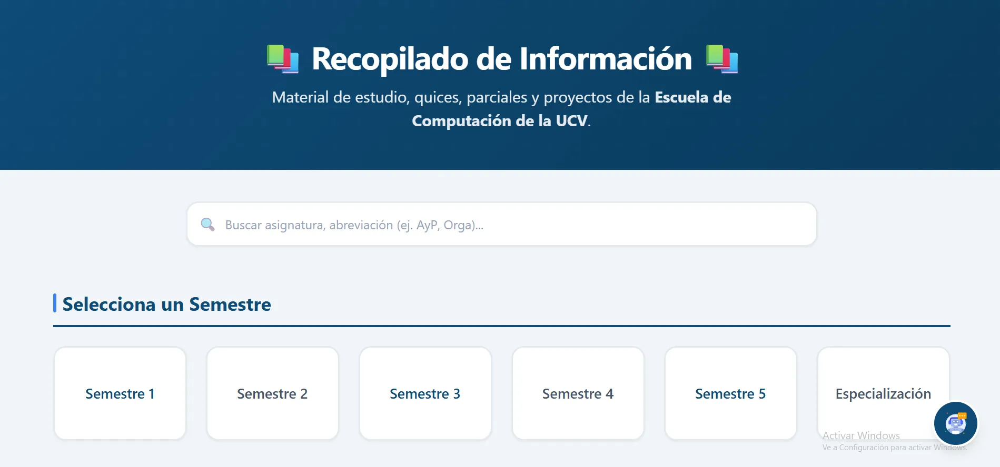

Recopilado de Información UCV
Plataforma web para centralización de recursos académicos por semestre.

Stack & Tecnologías Utilizadas
Descripción del Proyecto
Recopilado de Información UCV es una herramienta desarrollada para facilitar a los estudiantes el acceso organizado a guías, problemarios y parciales resueltos estructurados por semestres académicos y materias de Ciencias de la Computación.
El desarrollo se enfocó en garantizar una alta velocidad de carga, una estructura semántica clara y una experiencia responsiva tanto en dispositivos móviles como en pantallas de escritorio.
Módulos Claves & Características
- Asistente Virtual (Chatbot): Módulo integrado para orientar al estudiante resolviendo dudas.
- Búsqueda & Filtros Dinámicos: Barra de búsqueda optimizada para la localización rápida.
- Diseño Adaptativo (Responsive): Interfaz totalmente fluida.
- Control de Navegación (Página 404): Manejo de errores de ruta con una vista personalizada.
- Panel Administrativo: Módulo interno para la gestión del material.